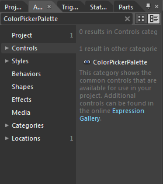
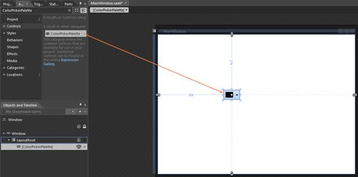

ColorPickerPalette can be added to an application by using XAML or C# code.
Adding through XAML
The following code example illustrates how to add the ColorPickerPalette control to an application through XAML.
|
[XAML] <syncfusion:ColorPickerPalette x:Name="ColorPicker"/>
|
Adding through C#
The following code example illustrates how to add the ColorPickerPalette control to an application through C#.
|
[C#] ColorPickerPalette colorpicker = new ColorPickerPalette(); this.LayoutRoot.Children.Add(colorpicker);
|
Adding through Blend
The following are the step by step procedure for adding ColorPickerPalette control to an application through Microsoft Expression Blend.
To add a ColorPickerPalette control to an application through Microsoft Expression Blend, follow the below steps.
1. Create a new Silverlight application in Microsoft Expression Blend.
2. Add the following reference to the sample application.
3. Syncfusion.Tools.WPF.dll
4. On the Window menu, select Assets. This will open the Assets Library dialog box.
5. In the search box, type “ColorPickerPalette” then the search results will be displayed as shown below.

Figure 188: Asset window showing the search results
6. Drag and drop the ColorPickerPalette control to the sample application.

Figure 189: Sample application screen after the ColorPickerPalette control is drag and dropped